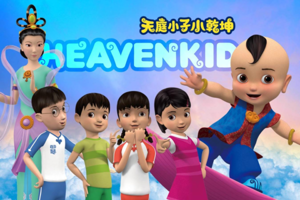

《小乾坤》（英文：Heavenkid）是新唐人亚太电视台原创的《弟子规》3D动画电视影集，将《弟子规》内容以现代生活小故事的方式呈现，于2015年首播，曾获台湾多个优秀儿少节目奖，并获台湾首座美国休士顿国际影展“电视儿童节目-金奖”。
以下是这位老师的心得，与大家分享。
大家好！
我是纽约州一所公立学校的中文老师，我们的中文课程已经成立五六年了。从一开始的七个学生到目前的一百多个学生。学生们基本上都是美国当地的孩子，也有一两个从中国大陆来的学生。
由于中共病毒的影响，有不少学生学习受到影响，有一个班的学生受到的负面影响最深，上课总是不认真、不专心，喜欢电玩游戏等等。我和朋友交流这个问题，她建议我可以给学生们看《小乾坤》。
从六年级到高中生都爱看
我的学生们大都是高中生，还有一个班是六年级的学生。当时我想《小乾坤》是小朋友的节目，我的学生能喜欢看吗？但是看到包装盒上有很多《小乾坤》得奖的资讯，心想这套节目质量应该很高，要不然不会拥有这么多的奖项。再一想，也可以让学生看《小乾坤》练习练习听力啊！
就这样我试着给高中的学生们放《小乾坤》。看过几集之后，每个星期有的学生就会追着我问什么时候可以看《小乾坤》。有个调皮的高中女生在班上说，《小乾坤》对她很有帮助，她很喜欢里面的故事，教导了她不少很好的理念，她说“It’s good for me”！这样我就利用星期五的课堂时间，给每个班的学生们播放几集《小乾坤》。
六年级的学生一般也都是星期五看《小乾坤》，有的学生还希望每天都有机会看《小乾坤》，一进教室就会问：今天可以看《小乾坤》吗？我还得安慰学生：不要急，这个星期五我们一起看！
每次看《小乾坤》的时候，我都会给学生们发一张小乾坤歌曲的歌词和拼音对照，这样他们就可以跟着学唱了（请参看简体/繁体/拼音歌词：小乾坤歌词）。
等看到《小乾坤》片尾，跳动动操的时候，六年级的学生尤其是女生都会站起来开心地和小乾坤共舞。
有一次学生们正在与《小乾坤》共舞，萤幕出现了问题，看不到小乾坤了，他们都很失望（看以下影片就知道那个孩子有多失望了……）。
小乾坤的课堂作业
每次看《小乾坤》的时候，我会给学生们一个课堂作业，比如在这一集里你看到了什么？学到了什么？你从《小乾坤》故事里学到的内容，你在学校，还有在家里都能够如何运用？你如何用《小乾坤》里学到的内容来提高自己的品行？每一集看过之后，学生都要写一些心得，还要在课堂上分享给大家听。
★课堂作业表格：xiao qian kun
有时候，我会用《小乾坤》给学生们学过的中文来做复习，比如“数字”，“多大了？”“长得什么样？”“做什么工作/职业”，“国家”等，这样学生会用自己的话来编故事。比如他们会用中文说“小乾坤今年130岁了。他没上学，他是一个老师。他住在天上。他没有兄弟姐妹，他是独生子。他有两个朋友。”“小乾坤长得胖胖的，矮矮的。他的眼睛大大的。他的鼻子（nose）小小的。他的头大大的，他的头发黑黑的。小乾坤会唱歌，会跳舞，还有神通。他可以变大变小。他很酷（kù-cool）。”
★详细内容请参见课程简报： 小乾坤
虽然《小乾坤》的内容和故事情节发生在台湾，但是美国学生们也都能看得懂，而且理解得很到位，觉得看过之后非常受益。我计划明年六年级的课可以用《小乾坤》的故事来教，现在正在酝酿之中。非常感谢《小乾坤》的团队能够做出这么尚好的系列，不光学生们受益，老师也跟着受益！
谢谢李老师的分享！
《小乾坤》的影片是中文发音，但是有中英字幕喔。
《小乾坤》也在干净世界！还没看过的朋友，第一集可以免费试看喔！
责任编辑：孙芸#
- 分享至Facebook
- 分享至Twitter
如果您有新闻线索或资料给，请进入安全投稿爆料平台。大头条集锦
- 小乾坤品德列车到后龙 学童体验生活常规
 新唐人“小乾坤品德列车”11月8日受邀开往苗栗县后龙新港国中小，透过活泼的动画和游戏方式，让300多位学童了解品德与生活常规的重要性；由于小乾坤与小朋友面对面互动，小朋友非常兴奋，品德教育更融入生活，也将小乾坤的叮咛牢记在心。
新唐人“小乾坤品德列车”11月8日受邀开往苗栗县后龙新港国中小，透过活泼的动画和游戏方式，让300多位学童了解品德与生活常规的重要性；由于小乾坤与小朋友面对面互动，小朋友非常兴奋，品德教育更融入生活，也将小乾坤的叮咛牢记在心。
- 小乾坤品德列车广受明义国小300位学生热烈欢迎 花莲县学生人数最多的明义国小于1月17日举办了一场研习，是由花莲县教育会主办，花莲市民代表会蔡翼钟代表服务处赞助的新唐人电视台的“小乾坤品德列车”活动。新唐人电视台原创3D动画《天庭小子—小乾坤》，将在花莲县学校推动读经教育的《弟子规》内容以活泼有趣的中华文化故事和生活故事呈现，让孩子从娱乐中学习“道德重于财富学识”的核心价值，达到潜移默化“学品德”的效果。
- 品德教育扎根计划 安平K.I.再捐《小乾坤》 台南市安平国际同济会携手台南市教育局合作办理道德教育扎根计划，并于15日举行品德教材济社群活动费捐赠典礼，现场展示年度4校落实品德教育成果，提升学童品德素养成效卓著；台南市长黄伟哲、教育局主任秘书杨志雄、市议员林美燕等共襄盛举。
- 《小乾坤》观后赛 师赞扎根品德提升学习力 2023《小乾坤》＆《悠游字在》全球观后心得比赛揭晓，12月17日在台中新乌日集思会议中心举办颁奖典礼。本届竞赛共1,396位参赛者，台湾213所小学参与。多位来自北中南获奖的同学分享比赛的收获，陪同的师长盛赞两部教材融入教学，不仅有助扎根品德教育，学生的学习力更有显着提升，让他们备感欣慰与惊喜。
- 观影《Esther》有感：彰显勇气、智慧与信仰 电影《Esther》（1999）是以《旧约圣经》中的《以斯帖记》改编的一部历史宗教剧情片。如果有像我一样喜欢历史宗教题材的朋友，这部影片一定不要错过。影片讲述了犹太女子以斯帖（Esther）如何从一个普通的犹太女孩成为波斯国王的王后，并最终救助她的民族免遭灭绝的传奇故事。影片的故事背景设定在古代波斯帝国，展现了勇气、智慧与信仰的结合。
- 蘑菇跃龙门 ——《错误的岩石》观后感 想看个电影轻松一下，GJW+里面那么多电影，先看哪个好呢？动画片比较不烧脑，画面美，容易获得简单的快乐，《错误的岩石》（The Wrong Rock）一下子吸引了我的注意力。只看缩图的话，完全无法想像影片内容——谁是主角，怎样的故事情节等，又只是十四分半的短片，那就从《错误的岩石》开始新旅程吧。
- “内心的力量” 观电影《比拉传奇》有感 这是我在观看《比拉传奇》这部动漫影片时印象最深的一句台词。在当今权势与利益相互交织，极力歪曲自由和人权的本意之际，观看这部有关信仰、毅力和社会正义的历史故事，让人对回归善念和正义主导的世界充满信心。
- 奇怪的数学家（In our Prime）观影有感 《奇怪的数学家》（In our Prime）是一部探讨数学、教育和人性的韩国电影。影片讲述了北朝鲜数学家李学成为追求数学研究而脱北，在韩国的一所重点高中担任保安时与一位将要被转学的数学后进生韩智宇结缘，并帮助其大幅度提高数学成绩并真正热爱上数学的故事。
- 《韩信》，我竟然看上了瘾 韩信的忠义，在我看来不仅是气节，更是大智慧。至于说结局，我以为那不重要，反正终究是要离开，早晚而已。这世界上当过皇帝的人数不胜数，但在浑浑浊世，始终能保持一身干净，有几人真做到了？
- 传播爱的蒲公英——《我想念我妈妈/Summer Snow》观后感 《Summer Snow》与《我想念我妈妈》，很难相信这两者是同一部影片的名字。英译中，一个字都没对应上，也是让人服气。“我想念我妈妈”，直白，挖地三尺的接地气，这类电影我大概率不看；“Summer Snow”，夏日之雪，如此的文艺脱俗，更不是我的菜。然而，完全不搭的两者摆在一起，再加上鲜绿背景上鹅黄衣衫的小姑娘阳光灿烂的笑容，莫名其妙地，鼠标就点了上去。
新唐人“小乾坤品德列车”11月8日受邀开往苗栗县后龙新港国中小，透过活泼的动画和游戏方式，让300多位学童了解品德与生活常规的重要性；由于小乾坤与小朋友面对面互动，小朋友非常兴奋，品德教育更融入生活，也将小乾坤的叮咛牢记在心。
花莲县学生人数最多的明义国小于1月17日举办了一场研习，是由花莲县教育会主办，花莲市民代表会蔡翼钟代表服务处赞助的新唐人电视台的“小乾坤品德列车”活动。新唐人电视台原创3D动画《天庭小子—小乾坤》，将在花莲县学校推动读经教育的《弟子规》内容以活泼有趣的中华文化故事和生活故事呈现，让孩子从娱乐中学习“道德重于财富学识”的核心价值，达到潜移默化“学品德”的效果。
台南市安平国际同济会携手台南市教育局合作办理道德教育扎根计划，并于15日举行品德教材济社群活动费捐赠典礼，现场展示年度4校落实品德教育成果，提升学童品德素养成效卓著；台南市长黄伟哲、教育局主任秘书杨志雄、市议员林美燕等共襄盛举。
2023《小乾坤》＆《悠游字在》全球观后心得比赛揭晓，12月17日在台中新乌日集思会议中心举办颁奖典礼。本届竞赛共1,396位参赛者，台湾213所小学参与。多位来自北中南获奖的同学分享比赛的收获，陪同的师长盛赞两部教材融入教学，不仅有助扎根品德教育，学生的学习力更有显着提升，让他们备感欣慰与惊喜。
电影《Esther》（1999）是以《旧约圣经》中的《以斯帖记》改编的一部历史宗教剧情片。如果有像我一样喜欢历史宗教题材的朋友，这部影片一定不要错过。影片讲述了犹太女子以斯帖（Esther）如何从一个普通的犹太女孩成为波斯国王的王后，并最终救助她的民族免遭灭绝的传奇故事。影片的故事背景设定在古代波斯帝国，展现了勇气、智慧与信仰的结合。
想看个电影轻松一下，GJW+里面那么多电影，先看哪个好呢？动画片比较不烧脑，画面美，容易获得简单的快乐，《错误的岩石》（The Wrong Rock）一下子吸引了我的注意力。只看缩图的话，完全无法想像影片内容——谁是主角，怎样的故事情节等，又只是十四分半的短片，那就从《错误的岩石》开始新旅程吧。
这是我在观看《比拉传奇》这部动漫影片时印象最深的一句台词。在当今权势与利益相互交织，极力歪曲自由和人权的本意之际，观看这部有关信仰、毅力和社会正义的历史故事，让人对回归善念和正义主导的世界充满信心。
《奇怪的数学家》（In our Prime）是一部探讨数学、教育和人性的韩国电影。影片讲述了北朝鲜数学家李学成为追求数学研究而脱北，在韩国的一所重点高中担任保安时与一位将要被转学的数学后进生韩智宇结缘，并帮助其大幅度提高数学成绩并真正热爱上数学的故事。
韩信的忠义，在我看来不仅是气节，更是大智慧。至于说结局，我以为那不重要，反正终究是要离开，早晚而已。这世界上当过皇帝的人数不胜数，但在浑浑浊世，始终能保持一身干净，有几人真做到了？
《Summer Snow》与《我想念我妈妈》，很难相信这两者是同一部影片的名字。英译中，一个字都没对应上，也是让人服气。“我想念我妈妈”，直白，挖地三尺的接地气，这类电影我大概率不看；“Summer Snow”，夏日之雪，如此的文艺脱俗，更不是我的菜。然而，完全不搭的两者摆在一起，再加上鲜绿背景上鹅黄衣衫的小姑娘阳光灿烂的笑容，莫名其妙地，鼠标就点了上去。花莲县学生人数最多的明义国小于1月17日举办了一场研习，是由花莲县教育会主办，花莲市民代表会蔡翼钟代表服务处赞助的新唐人电视台的“小乾坤品德列车”活动。新唐人电视台原创3D动画《天庭小子—小乾坤》，将在花莲县学校推动读经教育的《弟子规》内容以活泼有趣的中华文化故事和生活故事呈现，让孩子从娱乐中学习“道德重于财富学识”的核心价值，达到潜移默化“学品德”的效果。
台南市安平国际同济会携手台南市教育局合作办理道德教育扎根计划，并于15日举行品德教材济社群活动费捐赠典礼，现场展示年度4校落实品德教育成果，提升学童品德素养成效卓著；台南市长黄伟哲、教育局主任秘书杨志雄、市议员林美燕等共襄盛举。
2023《小乾坤》＆《悠游字在》全球观后心得比赛揭晓，12月17日在台中新乌日集思会议中心举办颁奖典礼。本届竞赛共1,396位参赛者，台湾213所小学参与。多位来自北中南获奖的同学分享比赛的收获，陪同的师长盛赞两部教材融入教学，不仅有助扎根品德教育，学生的学习力更有显着提升，让他们备感欣慰与惊喜。
电影《Esther》（1999）是以《旧约圣经》中的《以斯帖记》改编的一部历史宗教剧情片。如果有像我一样喜欢历史宗教题材的朋友，这部影片一定不要错过。影片讲述了犹太女子以斯帖（Esther）如何从一个普通的犹太女孩成为波斯国王的王后，并最终救助她的民族免遭灭绝的传奇故事。影片的故事背景设定在古代波斯帝国，展现了勇气、智慧与信仰的结合。
想看个电影轻松一下，GJW+里面那么多电影，先看哪个好呢？动画片比较不烧脑，画面美，容易获得简单的快乐，《错误的岩石》（The Wrong Rock）一下子吸引了我的注意力。只看缩图的话，完全无法想像影片内容——谁是主角，怎样的故事情节等，又只是十四分半的短片，那就从《错误的岩石》开始新旅程吧。
这是我在观看《比拉传奇》这部动漫影片时印象最深的一句台词。在当今权势与利益相互交织，极力歪曲自由和人权的本意之际，观看这部有关信仰、毅力和社会正义的历史故事，让人对回归善念和正义主导的世界充满信心。
《奇怪的数学家》（In our Prime）是一部探讨数学、教育和人性的韩国电影。影片讲述了北朝鲜数学家李学成为追求数学研究而脱北，在韩国的一所重点高中担任保安时与一位将要被转学的数学后进生韩智宇结缘，并帮助其大幅度提高数学成绩并真正热爱上数学的故事。
韩信的忠义，在我看来不仅是气节，更是大智慧。至于说结局，我以为那不重要，反正终究是要离开，早晚而已。这世界上当过皇帝的人数不胜数，但在浑浑浊世，始终能保持一身干净，有几人真做到了？
《Summer Snow》与《我想念我妈妈》，很难相信这两者是同一部影片的名字。英译中，一个字都没对应上，也是让人服气。“我想念我妈妈”，直白，挖地三尺的接地气，这类电影我大概率不看；“Summer Snow”，夏日之雪，如此的文艺脱俗，更不是我的菜。然而，完全不搭的两者摆在一起，再加上鲜绿背景上鹅黄衣衫的小姑娘阳光灿烂的笑容，莫名其妙地，鼠标就点了上去。台南市安平国际同济会携手台南市教育局合作办理道德教育扎根计划，并于15日举行品德教材济社群活动费捐赠典礼，现场展示年度4校落实品德教育成果，提升学童品德素养成效卓著；台南市长黄伟哲、教育局主任秘书杨志雄、市议员林美燕等共襄盛举。
2023《小乾坤》＆《悠游字在》全球观后心得比赛揭晓，12月17日在台中新乌日集思会议中心举办颁奖典礼。本届竞赛共1,396位参赛者，台湾213所小学参与。多位来自北中南获奖的同学分享比赛的收获，陪同的师长盛赞两部教材融入教学，不仅有助扎根品德教育，学生的学习力更有显着提升，让他们备感欣慰与惊喜。
电影《Esther》（1999）是以《旧约圣经》中的《以斯帖记》改编的一部历史宗教剧情片。如果有像我一样喜欢历史宗教题材的朋友，这部影片一定不要错过。影片讲述了犹太女子以斯帖（Esther）如何从一个普通的犹太女孩成为波斯国王的王后，并最终救助她的民族免遭灭绝的传奇故事。影片的故事背景设定在古代波斯帝国，展现了勇气、智慧与信仰的结合。
想看个电影轻松一下，GJW+里面那么多电影，先看哪个好呢？动画片比较不烧脑，画面美，容易获得简单的快乐，《错误的岩石》（The Wrong Rock）一下子吸引了我的注意力。只看缩图的话，完全无法想像影片内容——谁是主角，怎样的故事情节等，又只是十四分半的短片，那就从《错误的岩石》开始新旅程吧。
这是我在观看《比拉传奇》这部动漫影片时印象最深的一句台词。在当今权势与利益相互交织，极力歪曲自由和人权的本意之际，观看这部有关信仰、毅力和社会正义的历史故事，让人对回归善念和正义主导的世界充满信心。
《奇怪的数学家》（In our Prime）是一部探讨数学、教育和人性的韩国电影。影片讲述了北朝鲜数学家李学成为追求数学研究而脱北，在韩国的一所重点高中担任保安时与一位将要被转学的数学后进生韩智宇结缘，并帮助其大幅度提高数学成绩并真正热爱上数学的故事。
韩信的忠义，在我看来不仅是气节，更是大智慧。至于说结局，我以为那不重要，反正终究是要离开，早晚而已。这世界上当过皇帝的人数不胜数，但在浑浑浊世，始终能保持一身干净，有几人真做到了？
《Summer Snow》与《我想念我妈妈》，很难相信这两者是同一部影片的名字。英译中，一个字都没对应上，也是让人服气。“我想念我妈妈”，直白，挖地三尺的接地气，这类电影我大概率不看；“Summer Snow”，夏日之雪，如此的文艺脱俗，更不是我的菜。然而，完全不搭的两者摆在一起，再加上鲜绿背景上鹅黄衣衫的小姑娘阳光灿烂的笑容，莫名其妙地，鼠标就点了上去。2023《小乾坤》＆《悠游字在》全球观后心得比赛揭晓，12月17日在台中新乌日集思会议中心举办颁奖典礼。本届竞赛共1,396位参赛者，台湾213所小学参与。多位来自北中南获奖的同学分享比赛的收获，陪同的师长盛赞两部教材融入教学，不仅有助扎根品德教育，学生的学习力更有显着提升，让他们备感欣慰与惊喜。
电影《Esther》（1999）是以《旧约圣经》中的《以斯帖记》改编的一部历史宗教剧情片。如果有像我一样喜欢历史宗教题材的朋友，这部影片一定不要错过。影片讲述了犹太女子以斯帖（Esther）如何从一个普通的犹太女孩成为波斯国王的王后，并最终救助她的民族免遭灭绝的传奇故事。影片的故事背景设定在古代波斯帝国，展现了勇气、智慧与信仰的结合。
想看个电影轻松一下，GJW+里面那么多电影，先看哪个好呢？动画片比较不烧脑，画面美，容易获得简单的快乐，《错误的岩石》（The Wrong Rock）一下子吸引了我的注意力。只看缩图的话，完全无法想像影片内容——谁是主角，怎样的故事情节等，又只是十四分半的短片，那就从《错误的岩石》开始新旅程吧。
这是我在观看《比拉传奇》这部动漫影片时印象最深的一句台词。在当今权势与利益相互交织，极力歪曲自由和人权的本意之际，观看这部有关信仰、毅力和社会正义的历史故事，让人对回归善念和正义主导的世界充满信心。
《奇怪的数学家》（In our Prime）是一部探讨数学、教育和人性的韩国电影。影片讲述了北朝鲜数学家李学成为追求数学研究而脱北，在韩国的一所重点高中担任保安时与一位将要被转学的数学后进生韩智宇结缘，并帮助其大幅度提高数学成绩并真正热爱上数学的故事。
韩信的忠义，在我看来不仅是气节，更是大智慧。至于说结局，我以为那不重要，反正终究是要离开，早晚而已。这世界上当过皇帝的人数不胜数，但在浑浑浊世，始终能保持一身干净，有几人真做到了？
《Summer Snow》与《我想念我妈妈》，很难相信这两者是同一部影片的名字。英译中，一个字都没对应上，也是让人服气。“我想念我妈妈”，直白，挖地三尺的接地气，这类电影我大概率不看；“Summer Snow”，夏日之雪，如此的文艺脱俗，更不是我的菜。然而，完全不搭的两者摆在一起，再加上鲜绿背景上鹅黄衣衫的小姑娘阳光灿烂的笑容，莫名其妙地，鼠标就点了上去。电影《Esther》（1999）是以《旧约圣经》中的《以斯帖记》改编的一部历史宗教剧情片。如果有像我一样喜欢历史宗教题材的朋友，这部影片一定不要错过。影片讲述了犹太女子以斯帖（Esther）如何从一个普通的犹太女孩成为波斯国王的王后，并最终救助她的民族免遭灭绝的传奇故事。影片的故事背景设定在古代波斯帝国，展现了勇气、智慧与信仰的结合。
想看个电影轻松一下，GJW+里面那么多电影，先看哪个好呢？动画片比较不烧脑，画面美，容易获得简单的快乐，《错误的岩石》（The Wrong Rock）一下子吸引了我的注意力。只看缩图的话，完全无法想像影片内容——谁是主角，怎样的故事情节等，又只是十四分半的短片，那就从《错误的岩石》开始新旅程吧。
这是我在观看《比拉传奇》这部动漫影片时印象最深的一句台词。在当今权势与利益相互交织，极力歪曲自由和人权的本意之际，观看这部有关信仰、毅力和社会正义的历史故事，让人对回归善念和正义主导的世界充满信心。
《奇怪的数学家》（In our Prime）是一部探讨数学、教育和人性的韩国电影。影片讲述了北朝鲜数学家李学成为追求数学研究而脱北，在韩国的一所重点高中担任保安时与一位将要被转学的数学后进生韩智宇结缘，并帮助其大幅度提高数学成绩并真正热爱上数学的故事。
韩信的忠义，在我看来不仅是气节，更是大智慧。至于说结局，我以为那不重要，反正终究是要离开，早晚而已。这世界上当过皇帝的人数不胜数，但在浑浑浊世，始终能保持一身干净，有几人真做到了？
《Summer Snow》与《我想念我妈妈》，很难相信这两者是同一部影片的名字。英译中，一个字都没对应上，也是让人服气。“我想念我妈妈”，直白，挖地三尺的接地气，这类电影我大概率不看；“Summer Snow”，夏日之雪，如此的文艺脱俗，更不是我的菜。然而，完全不搭的两者摆在一起，再加上鲜绿背景上鹅黄衣衫的小姑娘阳光灿烂的笑容，莫名其妙地，鼠标就点了上去。想看个电影轻松一下，GJW+里面那么多电影，先看哪个好呢？动画片比较不烧脑，画面美，容易获得简单的快乐，《错误的岩石》（The Wrong Rock）一下子吸引了我的注意力。只看缩图的话，完全无法想像影片内容——谁是主角，怎样的故事情节等，又只是十四分半的短片，那就从《错误的岩石》开始新旅程吧。
这是我在观看《比拉传奇》这部动漫影片时印象最深的一句台词。在当今权势与利益相互交织，极力歪曲自由和人权的本意之际，观看这部有关信仰、毅力和社会正义的历史故事，让人对回归善念和正义主导的世界充满信心。
《奇怪的数学家》（In our Prime）是一部探讨数学、教育和人性的韩国电影。影片讲述了北朝鲜数学家李学成为追求数学研究而脱北，在韩国的一所重点高中担任保安时与一位将要被转学的数学后进生韩智宇结缘，并帮助其大幅度提高数学成绩并真正热爱上数学的故事。
韩信的忠义，在我看来不仅是气节，更是大智慧。至于说结局，我以为那不重要，反正终究是要离开，早晚而已。这世界上当过皇帝的人数不胜数，但在浑浑浊世，始终能保持一身干净，有几人真做到了？
《Summer Snow》与《我想念我妈妈》，很难相信这两者是同一部影片的名字。英译中，一个字都没对应上，也是让人服气。“我想念我妈妈”，直白，挖地三尺的接地气，这类电影我大概率不看；“Summer Snow”，夏日之雪，如此的文艺脱俗，更不是我的菜。然而，完全不搭的两者摆在一起，再加上鲜绿背景上鹅黄衣衫的小姑娘阳光灿烂的笑容，莫名其妙地，鼠标就点了上去。这是我在观看《比拉传奇》这部动漫影片时印象最深的一句台词。在当今权势与利益相互交织，极力歪曲自由和人权的本意之际，观看这部有关信仰、毅力和社会正义的历史故事，让人对回归善念和正义主导的世界充满信心。
《奇怪的数学家》（In our Prime）是一部探讨数学、教育和人性的韩国电影。影片讲述了北朝鲜数学家李学成为追求数学研究而脱北，在韩国的一所重点高中担任保安时与一位将要被转学的数学后进生韩智宇结缘，并帮助其大幅度提高数学成绩并真正热爱上数学的故事。
韩信的忠义，在我看来不仅是气节，更是大智慧。至于说结局，我以为那不重要，反正终究是要离开，早晚而已。这世界上当过皇帝的人数不胜数，但在浑浑浊世，始终能保持一身干净，有几人真做到了？
《Summer Snow》与《我想念我妈妈》，很难相信这两者是同一部影片的名字。英译中，一个字都没对应上，也是让人服气。“我想念我妈妈”，直白，挖地三尺的接地气，这类电影我大概率不看；“Summer Snow”，夏日之雪，如此的文艺脱俗，更不是我的菜。然而，完全不搭的两者摆在一起，再加上鲜绿背景上鹅黄衣衫的小姑娘阳光灿烂的笑容，莫名其妙地，鼠标就点了上去。《奇怪的数学家》（In our Prime）是一部探讨数学、教育和人性的韩国电影。影片讲述了北朝鲜数学家李学成为追求数学研究而脱北，在韩国的一所重点高中担任保安时与一位将要被转学的数学后进生韩智宇结缘，并帮助其大幅度提高数学成绩并真正热爱上数学的故事。
韩信的忠义，在我看来不仅是气节，更是大智慧。至于说结局，我以为那不重要，反正终究是要离开，早晚而已。这世界上当过皇帝的人数不胜数，但在浑浑浊世，始终能保持一身干净，有几人真做到了？
《Summer Snow》与《我想念我妈妈》，很难相信这两者是同一部影片的名字。英译中，一个字都没对应上，也是让人服气。“我想念我妈妈”，直白，挖地三尺的接地气，这类电影我大概率不看；“Summer Snow”，夏日之雪，如此的文艺脱俗，更不是我的菜。然而，完全不搭的两者摆在一起，再加上鲜绿背景上鹅黄衣衫的小姑娘阳光灿烂的笑容，莫名其妙地，鼠标就点了上去。韩信的忠义，在我看来不仅是气节，更是大智慧。至于说结局，我以为那不重要，反正终究是要离开，早晚而已。这世界上当过皇帝的人数不胜数，但在浑浑浊世，始终能保持一身干净，有几人真做到了？
《Summer Snow》与《我想念我妈妈》，很难相信这两者是同一部影片的名字。英译中，一个字都没对应上，也是让人服气。“我想念我妈妈”，直白，挖地三尺的接地气，这类电影我大概率不看；“Summer Snow”，夏日之雪，如此的文艺脱俗，更不是我的菜。然而，完全不搭的两者摆在一起，再加上鲜绿背景上鹅黄衣衫的小姑娘阳光灿烂的笑容，莫名其妙地，鼠标就点了上去。《Summer Snow》与《我想念我妈妈》，很难相信这两者是同一部影片的名字。英译中，一个字都没对应上，也是让人服气。“我想念我妈妈”，直白，挖地三尺的接地气，这类电影我大概率不看；“Summer Snow”，夏日之雪，如此的文艺脱俗，更不是我的菜。然而，完全不搭的两者摆在一起，再加上鲜绿背景上鹅黄衣衫的小姑娘阳光灿烂的笑容，莫名其妙地，鼠标就点了上去。